30+ Vintage Christmas Cookie Recipes
📌 Save to Pinterest
Some cookies taste like Christmas because they taste like childhood: the sugar cookies rolled out on a floured counter, the icebox logs sliced straight from the fridge, the spice bars glazed while still warm. This roundup gathers thirty vintage Christmas cookie recipes — old-fashioned favorites from grandma's kitchen, from sour cream sugar cookies and pecan sandies to lebkuchen bars, springerle and jam-filled rugelach. Bake a batch ahead, fill a tin or two, and the cookie table takes care of itself.
How to bake vintage Christmas cookies
Start with the doughs that need chilling — icebox logs, pinwheels, cutouts and springerle — and make them the day before so the flavors deepen and the shapes hold. Roll cutouts on a lightly floured surface and keep the dough cold between batches. For drop cookies and bars, a hot oven and a watchful eye matter more than anything: vintage recipes bake fast, so pull them when the edges are set and the centers still look soft. And if you are filling tins for gifts, pack crisp cookies apart from soft ones so nobody goes stale.
Good to know: Everything is written in American English, and measurements use US customary units — cups, tablespoons, and Fahrenheit — for cooks in the United States. Always follow safe food-handling guidance, and check labels for allergens when cooking for others.
Food safety: the eggs in these cookies are baked through — bake until set and golden. For egg dishes, the USDA safe temperature is 160°F (71°C)..
Sugar cookies, shortbread & pinwheels
The cookies that started it all — soft sugar cookies, slice-and-bake logs, buttery shortbread and pinwheels with a swirl of date filling.
1. Old-Fashioned Sour Cream Sugar Cookies

These soft, pillowy sugar cookies owe their tender crumb to sour cream, which keeps them moist for days and gives them a gentle tang under the sweet top. They roll out smoothly, hold their cut shapes beautifully, and bake up pale gold with a sugar dusting. They are the classic cookie-cutter cookie, made for frosting, sprinkling, and filling a tin.
Ingredients
- 1 cup butter
- 1 1/2 cups sugar
- 2 eggs
- 1 cup sour cream
- 1 tsp vanilla
- 4 cups flour
- 1 tsp baking soda
- 1/2 tsp salt
Directions
- Beat the softened butter with the sugar in a large bowl until light and fluffy, about 3 minutes.
- Beat in the eggs one at a time, then beat in the sour cream and vanilla until smooth.
- Whisk the flour, baking soda, and salt together, then stir into the butter mixture just until a soft dough forms.
- Shape the dough into two flat discs, wrap tightly, and chill for 1 hour, until firm.
- Preheat the oven to 350°F and line baking sheets with parchment. Roll one disc out on a floured surface to 1/4 inch thick and cut out shapes.
- Place the cutouts 1 inch apart on the sheets and sprinkle the tops lightly with sugar.
- Bake for 10 minutes, until the edges are set and the bottoms are just lightly golden. Cool 5 minutes on the sheet, then move to a rack.
2. Grandma's Icebox Cookies
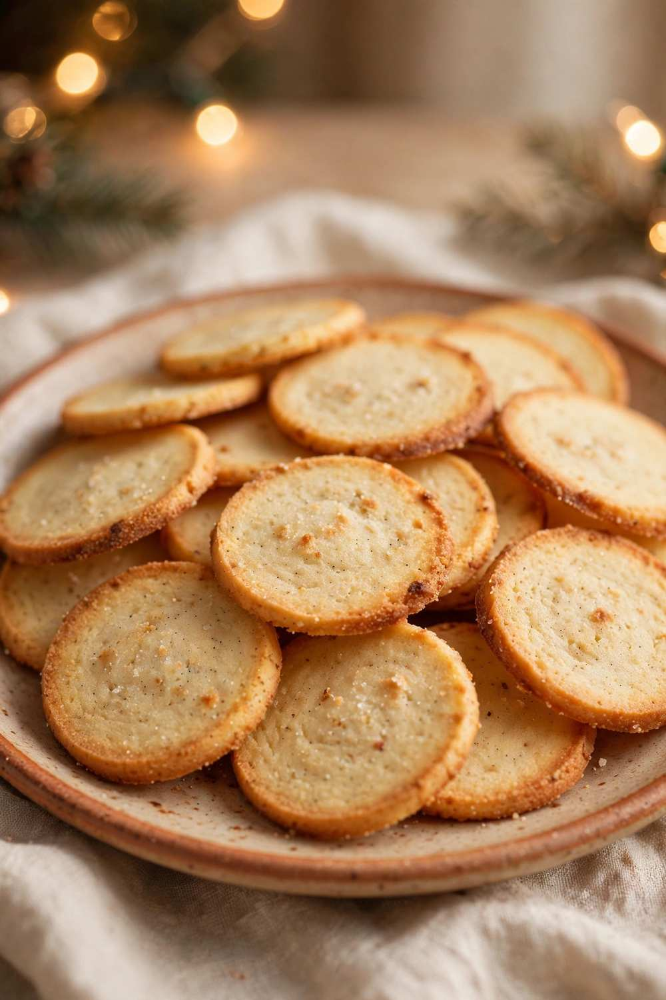
These are the original slice-and-bake cookies, a buttery brown sugar dough studded with pecans that waits patiently in the fridge until you need it. Sliced thin and baked golden, they turn crisp at the edges and tender in the middle, with a nutty, caramel warmth. Keep a log in the freezer and fresh cookies are always ten minutes away.
Ingredients
- 1 cup butter
- 1 cup sugar
- 1 cup brown sugar
- 2 eggs
- 1 tsp vanilla
- 3 1/2 cups flour
- 1 tsp baking soda
- 1 cup chopped pecans
Directions
- Beat the softened butter with the sugar and brown sugar until light and fluffy, about 3 minutes.
- Beat in the eggs one at a time, then beat in the vanilla until smooth.
- Whisk the flour and baking soda together, then stir into the butter mixture just until combined.
- Stir in the chopped pecans until spread evenly through the dough.
- Divide the dough in half and shape each half into a log about 2 inches across. Wrap tightly and chill overnight, until firm.
- Preheat the oven to 350°F and line baking sheets with parchment. Slice a log into thin rounds, about 1/4 inch thick.
- Place the slices 1 inch apart on the sheets and bake for 10 minutes, until the edges are golden. Cool 5 minutes on the sheet, then move to a rack.
3. Pecan Sandies

These crumbly, melt-in-your-mouth shortbread cookies are rich with butter and finely chopped pecans, with a sandy texture that dissolves on the tongue. Rolled in powdered sugar while still warm, they wear a snowy coat that makes them look like they belong on a Christmas table. They keep beautifully in a tin for a week.
Ingredients
- 1 cup butter
- 1/2 cup powdered sugar
- 2 cups flour
- 1 cup finely chopped pecans
- 1 tsp vanilla
- 1/4 tsp salt
Directions
- Beat the softened butter with the powdered sugar until smooth and creamy, about 2 minutes.
- Beat in the vanilla, then stir in the flour and salt just until a soft dough comes together.
- Fold in the finely chopped pecans until spread evenly through the dough.
- Preheat the oven to 325°F and line baking sheets with parchment paper.
- Shape the dough into small rounds, about 1 inch across, and place them 1 inch apart on the sheets.
- Bake for 18 minutes, until the bottoms are lightly golden and the tops look set and pale.
- Cool on the sheet for 5 minutes, then roll in powdered sugar while still warm. Cool completely and roll once more if you like a thicker coat.
4. Date Pinwheel Cookies
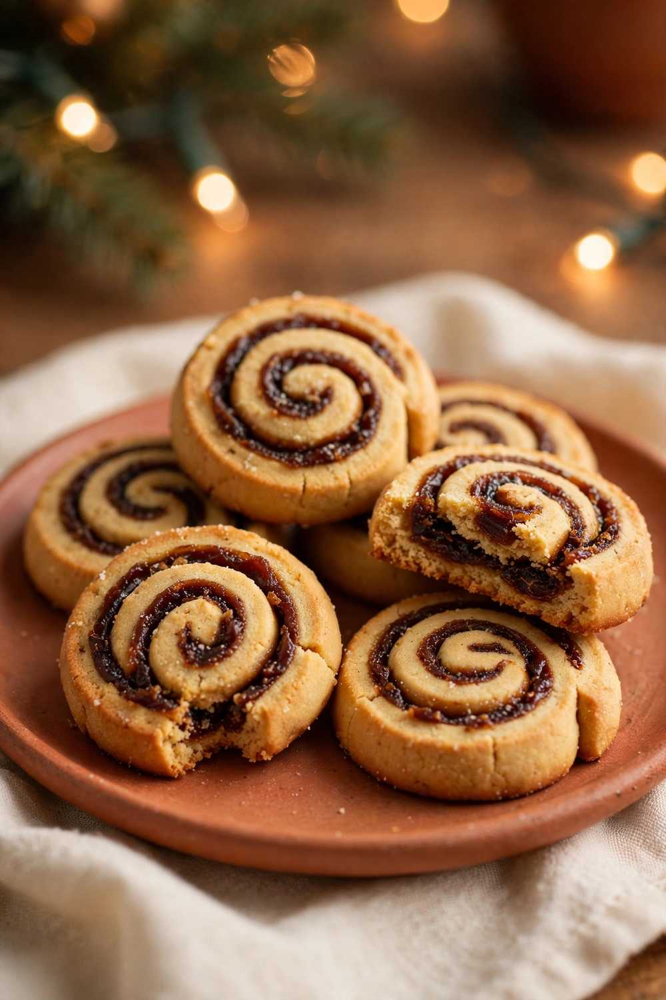
These old-fashioned pinwheels hide a dark, jammy ribbon of simmered dates inside a buttery brown sugar cookie, so every slice shows a perfect spiral. The filling is deeply sweet and almost caramel-like, while the cookie around it stays tender and golden. They look impressive in a tin and taste like a cookie from another, slower era.
Ingredients
- 2 cups chopped dates
- 1/2 cup sugar
- 1 cup water
- 1 cup butter
- 1 cup brown sugar
- 1 egg
- 3 cups flour
- 1 tsp baking soda
Directions
- Simmer the dates, sugar, and water over medium heat, stirring often, about 10 minutes, until thick and jam-like. Cool completely.
- Beat the butter with the brown sugar until fluffy, about 3 minutes, then beat in the egg. Stir in the flour and baking soda just until combined.
- Roll half the dough on a floured surface into a rectangle about 1/4 inch thick.
- Spread half the cooled date filling over the rectangle, leaving a small border along one long edge, then roll it up snugly. Wrap tightly and chill at least 2 hours, until firm. Repeat with the rest.
- Preheat the oven to 350°F and line baking sheets with parchment. Slice the logs into 1/4-inch rounds, 1 inch apart on the sheets.
- Bake 12 minutes, until the edges are set and lightly golden. Cool 5 minutes on the sheet, then move to a rack.
5. Hermit Cookies

Hermits are the chewy, darkly spiced cookies of New England winters, packed with raisins and walnuts and sweetened with molasses. They bake up soft and cake-like, with cinnamon and nutmeg warming every bite, and they actually taste better the next day as the spices deepen. They are the cookie to bake when the house needs to smell like Christmas.
Ingredients
- 1/2 cup butter
- 1 cup brown sugar
- 1 egg
- 1/4 cup molasses
- 2 cups flour
- 1 tsp cinnamon
- 1/2 tsp nutmeg
- 1/2 tsp baking soda
- 1 cup raisins
- 1/2 cup chopped walnuts
Directions
- Beat the softened butter with the brown sugar in a large bowl until light and fluffy, about 3 minutes.
- Beat in the egg, then beat in the molasses until the mixture is smooth and dark.
- Whisk together the flour, cinnamon, nutmeg, and baking soda, then stir the dry mixture into the butter mixture just until combined.
- Fold in the raisins and chopped walnuts, mixing only until they are spread evenly through the dough.
- Preheat the oven to 350°F and line baking sheets with parchment paper.
- Drop the dough by rounded spoonfuls onto the sheets, leaving about 2 inches between cookies.
- Bake for 12 minutes, until the edges are set and the centers still look slightly soft. Cool on the sheet for 5 minutes, then move to a rack to cool completely.
6. Brown Sugar Shortbread Fingers

These crisp, buttery fingers carry a light caramel note from brown sugar, which sets them apart from plain shortbread. They snap cleanly, melt on the tongue, and need nothing more than a dusting of sugar on top. Cut them while warm and they keep their neat edges, ready to stand in a tin beside the fancier cookies.
Ingredients
- 1 cup butter
- 1/2 cup brown sugar
- 2 cups flour
- 1/4 tsp salt
- 1 tsp vanilla
Directions
- Beat the softened butter with the brown sugar and vanilla in a large bowl until smooth and creamy, about 2 minutes.
- Stir in the flour and salt just until a soft dough forms. Do not overwork it, or the shortbread will turn tough.
- Preheat the oven to 325°F and line a 9x13-inch baking pan with parchment paper.
- Press the dough evenly into the pan, smoothing the top with the back of a spoon.
- Score the dough into fingers with a sharp knife, cutting almost but not quite through, and prick each finger once or twice with a fork.
- Bake for 25 minutes, until the shortbread is set and lightly golden at the edges.
- While still warm, cut along the scored lines, then cool in the pan for 10 minutes before lifting the fingers out onto a rack.
Spiced, citrus & jam-filled cookies
Warm spice, bright citrus and sweet jam — lebkuchen bars, lemon meltaways, apricot kolaches and snappy gingersnaps.
7. Lebkuchen Bars
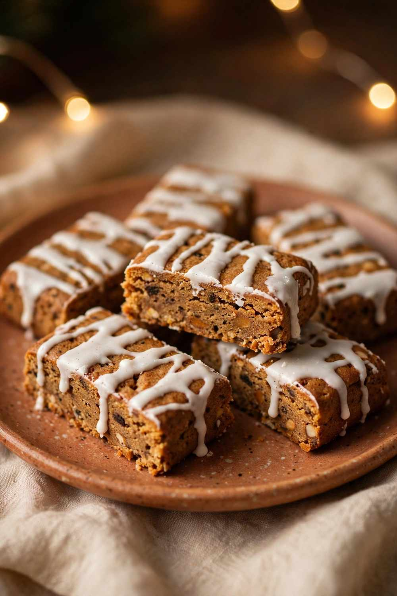
Lebkuchen are soft German spice bars, dark with honey and warm with cinnamon, cloves, and nutmeg, then finished with a sweet white glaze that sets into a crackly shell. They taste like a gingerbread cake and a cookie at once, and they keep for days, growing more fragrant as they sit. They are the oldest Christmas cookie on this list.
Ingredients
- 2 cups flour
- 1/2 cup honey
- 1/2 cup brown sugar
- 1 egg
- 1 tsp cinnamon
- 1/2 tsp cloves
- 1/2 tsp nutmeg
- 1 tsp baking soda
- 1 cup powdered sugar
- 2 tbsp milk
Directions
- Warm the honey and brown sugar together in a saucepan over low heat, stirring until the sugar dissolves, about 3 minutes. Remove from the heat and cool slightly, about 10 minutes.
- Stir the egg into the cooled honey mixture until smooth.
- Whisk together the flour, cinnamon, cloves, nutmeg, and baking soda, then stir into the honey mixture until a soft, sticky dough forms.
- Preheat the oven to 350°F and grease a 9x13-inch baking pan or line it with parchment.
- Spread the dough evenly into the pan, smoothing the top with wet fingertips.
- Bake for 20 minutes, until the bars are set and the top springs back when lightly pressed.
- While the bars are still warm, whisk the powdered sugar with the milk until smooth and spread the glaze over the top. Let it set 30 minutes, then cut into bars.
8. Almond Crescents
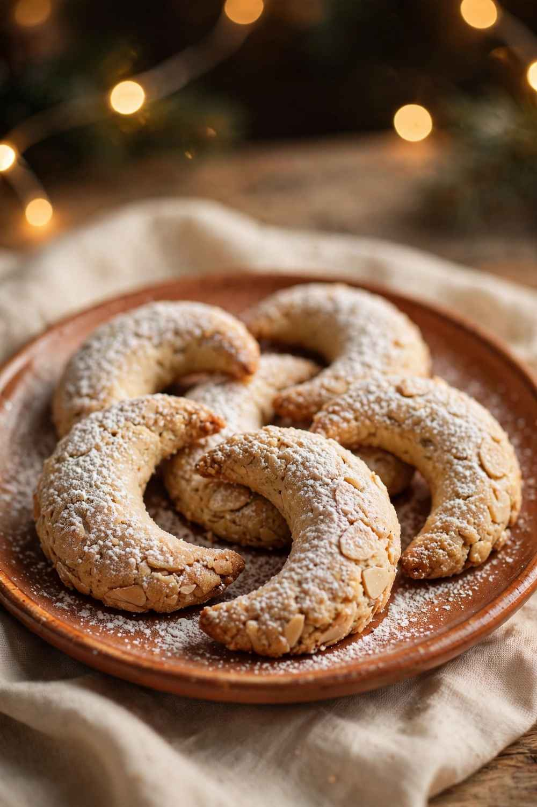
These delicate crescent cookies are tender, nutty, and dusted thickly in powdered sugar, like little moons on a plate. Ground almonds give them a rich, marzipan-like flavor, and they crumble softly with each bite. They are a quiet, elegant cookie, the one people reach for second after the showier ones are gone.
Ingredients
- 1 cup butter
- 1/2 cup powdered sugar
- 2 cups flour
- 1 cup ground almonds
- 1 tsp almond extract
- powdered sugar for rolling
Directions
- Beat the softened butter with the powdered sugar until smooth and creamy, about 2 minutes.
- Beat in the almond extract, then stir in the flour and ground almonds just until a soft dough forms.
- Preheat the oven to 325°F and line baking sheets with parchment paper.
- Pinch off pieces of dough and roll each into a small log about 3 inches long, then curve the ends inward to form a crescent. Place 1 inch apart on the sheets.
- Bake for 15 minutes, until the cookies are set and the bottoms are lightly golden. The tops should stay pale.
- Cool on the sheet for 5 minutes, then roll gently in powdered sugar while still warm.
- Cool completely on a rack and roll once more in powdered sugar before serving, for a thick snowy coat.
9. Lemon Meltaways
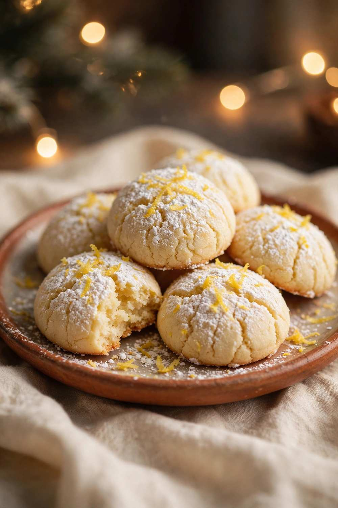
These pale, buttery cookies are bright with lemon zest and lemon juice, and they live up to their name, dissolving softly on the tongue. Cornstarch in the dough makes the crumb fine and tender, while the powdered sugar dusting adds a snowy finish. They are the lightest, freshest cookie on the Christmas table.
Ingredients
- 1 cup butter
- 1/2 cup powdered sugar
- 2 cups flour
- 1/2 cup cornstarch
- zest of 2 lemons
- 1 tbsp lemon juice
- powdered sugar for dusting
Directions
- Beat the softened butter with the powdered sugar and lemon zest until smooth and creamy, about 2 minutes.
- Whisk together the flour and cornstarch, then stir into the butter mixture just until a soft dough forms.
- Preheat the oven to 350°F and line baking sheets with parchment paper.
- Roll the dough into small balls, about 1 inch across, and place them 1 inch apart on the sheets. Flatten each ball slightly with your palm.
- Bake for 14 minutes, until the cookies are set and the bottoms are just lightly golden. The tops should stay pale.
- Cool on the sheet for 5 minutes, then move to a rack to cool completely.
- Whisk a spoonful of powdered sugar with the lemon juice to make a thin glaze, drizzle it over the cooled cookies, and dust generously with more powdered sugar.
10. Apricot Kolaches
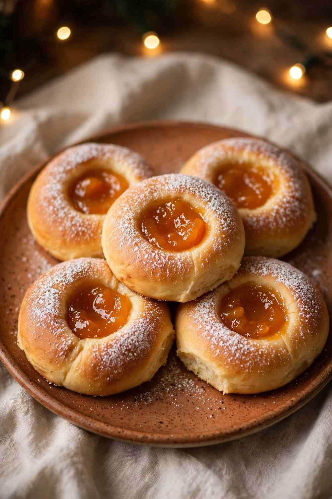
Kolaches are flaky, cream cheese pastry squares folded around a spoonful of sweet apricot jam, with corners pinched to the center like a little envelope. The dough is rich and tender, the jam turns glossy in the oven, and a dusting of powdered sugar finishes them. They are as pretty as they are delicious, straight from a Czech bakery.
Ingredients
- 1 cup butter
- 8 oz cream cheese
- 2 cups flour
- 1 cup apricot jam
- 1 egg yolk
- powdered sugar for dusting
Directions
- Beat the softened butter with the cream cheese until smooth, about 2 minutes.
- Stir in the flour just until combined, then shape into a flat disc, wrap tightly, and chill 1 hour, until firm.
- Preheat the oven to 350°F and line baking sheets with parchment paper.
- Roll the chilled dough out on a floured surface to 1/4 inch thick and cut into 3-inch squares.
- Spoon about 1 teaspoon of apricot jam into the center of each square, then fold two opposite corners to the center and press to seal.
- Beat the egg yolk with a teaspoon of water and brush it over the folded corners to help them hold.
- Place the kolaches 1 inch apart on the sheets and bake for 15 minutes, until set and lightly golden. Cool 5 minutes, then move to a rack and dust with powdered sugar.

11. Old-Fashioned Oatmeal Raisin Cookies

These are the oatmeal cookies grandma actually made, thick, chewy, and full of plump raisins, with cinnamon warming every bite. Old-fashioned oats give them a hearty, nubby texture that quick oats never can, and the edges bake up crisp while the centers stay soft. They are the cookie jar staple that never goes out of style.
Ingredients
- 1 cup butter
- 1 cup brown sugar
- 1/2 cup sugar
- 2 eggs
- 1 tsp vanilla
- 1 1/2 cups flour
- 1 tsp cinnamon
- 1 tsp baking soda
- 3 cups old-fashioned oats
- 1 cup raisins
Directions
- Beat the softened butter with the brown sugar and sugar until light and fluffy, about 3 minutes.
- Beat in the eggs one at a time, then beat in the vanilla until smooth.
- Whisk together the flour, cinnamon, and baking soda, then stir into the butter mixture just until combined.
- Stir in the old-fashioned oats and raisins, mixing only until spread evenly through the dough.
- Preheat the oven to 350°F and line baking sheets with parchment paper.
- Drop the dough by rounded spoonfuls onto the sheets, leaving about 2 inches between cookies.
- Bake for 12 minutes, until the edges are golden and set and the centers still look slightly soft. Cool 5 minutes on the sheet, then move to a rack.
12. Gingersnaps

True gingersnaps are thin, crisp, and snappy, with a bold ginger bite and a crackled sugar top that shatters when you bite in. Molasses darkens them and deepens the spice, while rolling them in sugar gives each cookie a sparkling crust. They are made for dunking in coffee, and they keep their snap for days in a tin.
Ingredients
- 3/4 cup butter
- 1 cup sugar
- 1 egg
- 1/4 cup molasses
- 2 cups flour
- 2 tsp ground ginger
- 1 tsp cinnamon
- 1 tsp baking soda
- sugar for rolling
Directions
- Beat the softened butter with the sugar until light and fluffy, about 3 minutes.
- Beat in the egg, then beat in the molasses until the mixture is smooth and dark.
- Whisk together the flour, ground ginger, cinnamon, and baking soda, then stir into the butter mixture just until a soft dough forms.
- Preheat the oven to 350°F and line baking sheets with parchment paper.
- Roll the dough into small balls, about 1 inch across, then roll each ball in sugar until fully coated.
- Place the balls 2 inches apart on the sheets, leaving room for them to spread into thin rounds.
- Bake for 12 minutes, until the cookies are set with crackled tops and the edges are firm. Cool 5 minutes on the sheet, then move to a rack; they crisp as they cool.
Crinkles, toffee bars & frosted cutouts
Crackled tops, buttery bars and old-fashioned frosting — molasses crinkles, toffee bars, whipped shortbread and frosted cutouts.
13. Molasses Crinkles

Molasses crinkles wear their signature crackled tops like a badge, with soft, chewy centers hiding underneath the sugar crust. Brown sugar and molasses give them a deep, almost toffee-like sweetness, and the ginger and cinnamon make them taste like the holidays. They are best eaten still slightly warm, when the centers are at their softest.
Ingredients
- 3/4 cup butter
- 1 cup brown sugar
- 1 egg
- 1/4 cup molasses
- 2 1/4 cups flour
- 2 tsp baking soda
- 1 tsp cinnamon
- 1 tsp ginger
- sugar for rolling
Directions
- Beat the softened butter with the brown sugar until light and fluffy, about 3 minutes.
- Beat in the egg, then beat in the molasses until the mixture is smooth and dark.
- Whisk together the flour, baking soda, cinnamon, and ginger, then stir into the butter mixture just until a soft dough forms.
- Preheat the oven to 375°F and line baking sheets with parchment paper.
- Roll the dough into balls about 1 inch across, then roll each ball in sugar until fully coated.
- Place the balls 2 inches apart on the sheets, leaving room for them to spread and crackle.
- Bake for 10 minutes, until the tops are crackled and the edges are set but the centers still look soft. Cool 5 minutes on the sheet, then move to a rack.
14. Whipped Shortbread
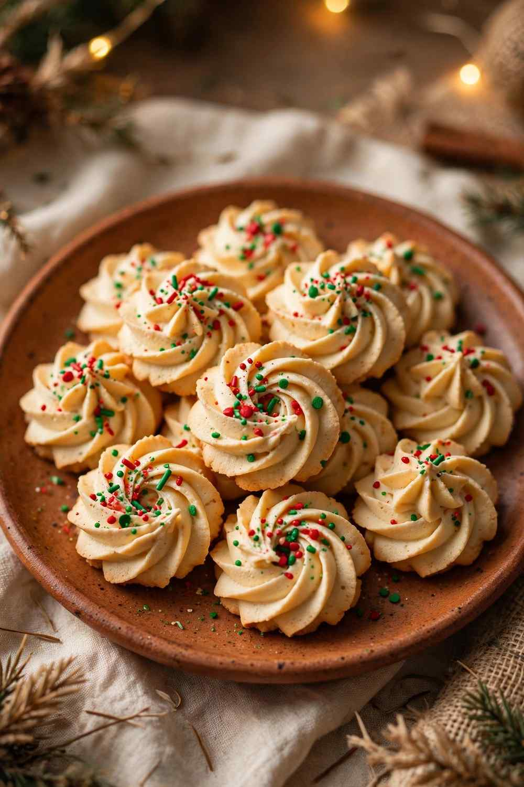
Whipped shortbread is shortbread at its lightest, beaten until pale and fluffy, then piped into little rosettes that melt the moment they touch your tongue. A touch of cornstarch keeps the crumb fine and tender, and red and green sprinkles turn each one into a tiny Christmas decoration. They are delicate, so handle them gently.
Ingredients
- 1 cup butter
- 1/2 cup powdered sugar
- 1 1/2 cups flour
- 1/2 cup cornstarch
- 1 tsp vanilla
- red and green sprinkles
Directions
- Beat the softened butter with the powdered sugar on medium-high speed for 3 to 4 minutes, until very pale, light, and fluffy.
- Beat in the vanilla, then add the flour and cornstarch and beat on low speed just until a soft, smooth dough forms.
- Preheat the oven to 300°F and line baking sheets with parchment paper.
- Spoon the dough into a piping bag fitted with a large star tip and pipe small rosettes onto the sheets, or drop rounded spoonfuls and swirl the tops with a fork.
- Sprinkle each rosette with red and green sprinkles, pressing them in lightly so they stick.
- Bake for 18 minutes, until the cookies are set and the bottoms are just lightly golden. The tops should stay pale.
- Cool completely on the sheet before moving them, since whipped shortbread is fragile while warm.
15. Butter Pecan Cookies

These buttery drop cookies are studded with toasted pecans, which turn nutty and fragrant in the oven and give every bite a crunch. Brown sugar adds a caramel note that pairs perfectly with the pecans, and the cookies bake up golden with crisp edges and soft centers. They taste like the best part of a pecan pie, in cookie form.
Ingredients
- 1 cup butter
- 1 cup brown sugar
- 1 egg
- 1 tsp vanilla
- 2 cups flour
- 1 tsp baking soda
- 1 cup toasted chopped pecans
Directions
- Beat the softened butter with the brown sugar until light and fluffy, about 3 minutes.
- Beat in the egg and vanilla until smooth.
- Whisk together the flour and baking soda, then stir into the butter mixture just until combined.
- Fold in the toasted chopped pecans, mixing only until spread evenly through the dough.
- Preheat the oven to 350°F and line baking sheets with parchment paper.
- Drop the dough by rounded spoonfuls onto the sheets, leaving about 2 inches between cookies.
- Bake for 12 minutes, until the edges are golden and set and the centers still look slightly soft. Cool 5 minutes on the sheet, then move to a rack.
16. English Toffee Bars

These buttery bars are shortbread at the bottom, toffee-sweet in the middle, and finished with a layer of melted chocolate and chopped pecans on top. They cut into neat squares that look like candy-shop treats, and they travel well in a tin. One pan makes enough to share, which is good, because nobody stops at one.
Ingredients
- 1 cup butter
- 1 cup brown sugar
- 1 egg yolk
- 2 cups flour
- 1 tsp vanilla
- 1 cup chocolate chips
- 1/2 cup chopped pecans
Directions
- Beat the softened butter with the brown sugar until light and fluffy, about 3 minutes.
- Beat in the egg yolk and vanilla until smooth.
- Stir in the flour just until a soft dough forms, then press the dough evenly into a greased 9x13-inch baking pan.
- Preheat the oven to 350°F and bake for 20 minutes, until the bars are set and lightly golden at the edges.
- While the bars are still hot, sprinkle the chocolate chips evenly over the top and let them sit 3 to 5 minutes, until soft and melted.
- Spread the melted chocolate into an even layer with a spatula and sprinkle the chopped pecans over the top.
- Let the bars cool completely in the pan before cutting into squares.
17. Frosted Sour Cream Cutouts
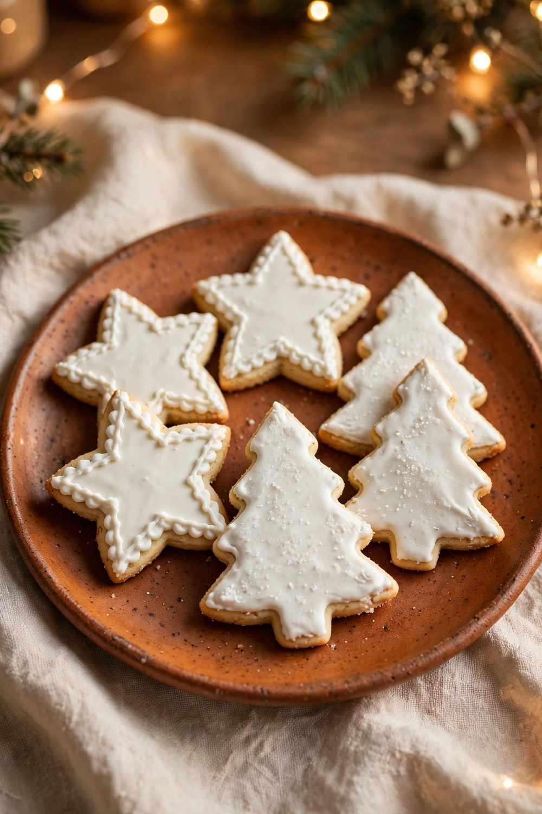
These soft, cake-like cutout cookies are the ones to frost with the kids, tinted pink, green, and white with old-fashioned powdered sugar icing. Sour cream keeps them pillowy and tender, and they hold their star and tree shapes beautifully in the oven. Frost them once cool and they turn into the prettiest cookies on the table.
Ingredients
- 1/2 cup butter
- 1 cup sugar
- 1 egg
- 1/2 cup sour cream
- 1 tsp vanilla
- 2 1/2 cups flour
- 1 tsp baking powder
- 1/2 tsp baking soda
- 2 cups powdered sugar
- 3 tbsp milk
- food coloring
Directions
- Beat the softened butter with the sugar until light and fluffy, about 3 minutes.
- Beat in the egg, then the sour cream and vanilla until smooth.
- Whisk the flour, baking powder, and baking soda together, then stir into the butter mixture just until combined.
- Shape the dough into a disc, wrap tightly, and chill 1 hour, until firm.
- Preheat the oven to 375°F and line baking sheets with parchment. Roll the dough to 1/4 inch thick and cut out shapes.
- Place the cutouts 1 inch apart on the sheets and bake for 8 minutes, until the edges are set and the bottoms are lightly golden. Cool completely on a rack.
- Whisk the powdered sugar with the milk until smooth, divide into bowls, and tint each with food coloring. Frost the cooled cookies and let the icing set 30 minutes before stacking.
18. German Springerle Cookies

Springerle are the embossed cookies of old Germany, anise-scented and stamped with intricate molds that leave a raised picture on top. They need a long, slow drying time so the design holds, then bake into pale, crisp cookies with a delicate licorice warmth. They are as much craft as baking, and worth every minute.
Ingredients
- 4 eggs
- 2 cups sugar
- 1 tsp anise extract
- 4 cups flour
- 1 tsp baking powder
- 1/2 tsp salt
Directions
- Beat the eggs and sugar on medium-high speed for about 10 minutes, until very thick, pale, and ribbons off the beaters.
- Beat in the anise extract, then stir in the flour, baking powder, and salt just until combined.
- Roll the dough out on a floured surface to about 1/2 inch thick.
- Dust a springerle mold with flour and press it firmly into the dough, lifting straight up to leave a clear design. Cut the cookies apart.
- Place the cookies on parchment-lined sheets and let them dry uncovered at room temperature overnight, at least 12 hours, so the designs set.
- Preheat the oven to 325°F and bake for 15 minutes, until set and the bottoms are lightly golden. The tops should stay pale.
- Cool completely on a rack. Springerle are crisp when fresh and soften after a day or two in a tin.
Biscotti, rugelach & fruit cookies
Twice-baked, flaky and fruit-filled — anise biscotti, jam rugelach, cranberry biscotti and chewy coconut macaroons.
19. Italian Anise Biscotti
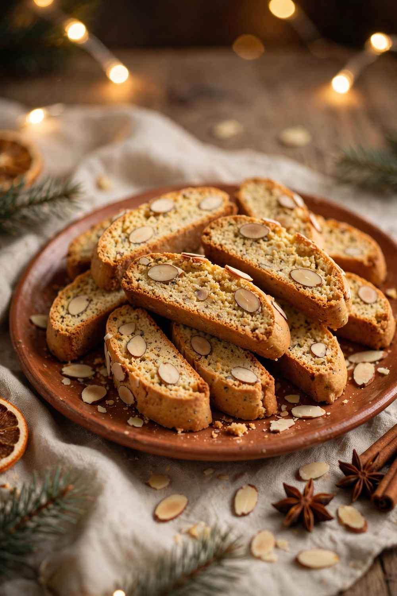
These twice-baked biscotti are crisp, dry, and made for dunking, with a warm anise flavor and sliced almonds running through every slice. The first bake sets the logs, the second bake dries them to a satisfying crunch, and they keep for weeks in a tin. Serve them beside coffee and watch them disappear.
Ingredients
- 3 cups flour
- 1 cup sugar
- 3 eggs
- 1/2 cup butter, melted
- 2 tsp anise extract
- 1 tsp baking powder
- 1/2 cup sliced almonds
Directions
- Preheat the oven to 350°F and line a baking sheet with parchment paper.
- Whisk together the flour, sugar, and baking powder in a large bowl.
- Whisk the eggs with the melted butter and anise extract until smooth, then pour into the dry mixture and stir until a stiff dough forms.
- Fold in the sliced almonds, then divide the dough in half and shape each half into a log about 12 inches long and 2 inches wide.
- Bake for 25 minutes, until the logs are firm and lightly golden. Cool 10 minutes, then reduce the oven to 325°F.
- Slice each log on the diagonal into 1/2-inch slices and lay them cut-side down on the sheet.
- Bake again for 10 minutes per side, turning once, until the biscotti are crisp and golden. Cool completely on a rack.
20. Jam-Filled Rugelach
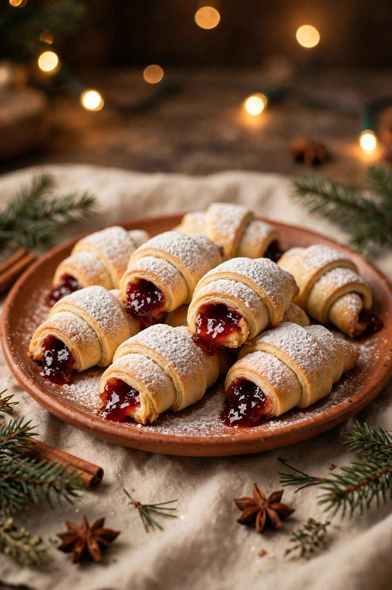
Rugelach are flaky little crescents of cream cheese pastry, rolled around apricot jam, walnuts, sugar, and cinnamon into a sweet, spiced spiral. The dough bakes up tender and rich, the jam turns glossy inside, and the sugar on top crackles lightly. They are fiddly, but one bite explains why grandmothers made them every Christmas.
Ingredients
- 1 cup butter
- 8 oz cream cheese
- 2 cups flour
- 1/2 cup apricot jam
- 1/2 cup chopped walnuts
- 1/4 cup sugar
- 1 tsp cinnamon
Directions
- Beat the softened butter with the cream cheese until smooth, about 2 minutes.
- Stir in the flour just until combined, then divide into two discs, wrap tightly, and chill at least 1 hour, until firm.
- Preheat the oven to 350°F and line baking sheets with parchment paper.
- Roll one disc out on a floured surface into a circle about 12 inches across.
- Spread half the apricot jam thinly over the circle, then sprinkle half the walnuts, sugar, and cinnamon over the jam.
- Cut the circle into 12 wedges and roll each wedge up from the wide end to the point, curving the ends into a crescent. Repeat with the remaining dough and filling.
- Place the rugelach point-side down, 1 inch apart, and bake for 20 minutes, until golden and crisp. Cool 5 minutes on the sheet, then move to a rack.
21. Cranberry Orange Biscotti

These twice-baked biscotti pair tart dried cranberries with bright orange zest and crunchy pistachios, so every slice looks festive and tastes like Christmas morning. They bake up crisp and dry, made for dunking in coffee or tea, and they keep for weeks in a tin. They are the prettiest biscotti on the cookie table.
Ingredients
- 2 1/2 cups flour
- 1 cup sugar
- 2 eggs
- 1/2 cup dried cranberries
- zest of 1 orange
- 1 tsp baking powder
- 1/2 cup chopped pistachios
Directions
- Preheat the oven to 350°F and line a baking sheet with parchment paper.
- Whisk together the flour, sugar, and baking powder in a large bowl.
- Beat in the eggs and orange zest, then stir until a stiff dough forms.
- Fold in the dried cranberries and chopped pistachios until spread evenly through the dough.
- Divide the dough in half and shape each half into a log about 12 inches long and 2 inches wide.
- Bake for 25 minutes, until the logs are firm and lightly golden. Cool 10 minutes, then reduce the oven to 325°F.
- Slice each log on the diagonal into 1/2-inch slices and lay them cut-side down on the sheet.
- Bake again for 10 minutes per side, turning once, until the biscotti are crisp and golden. Cool completely on a rack.
22. Old-Fashioned Fork-Pressed Peanut Butter Cookies
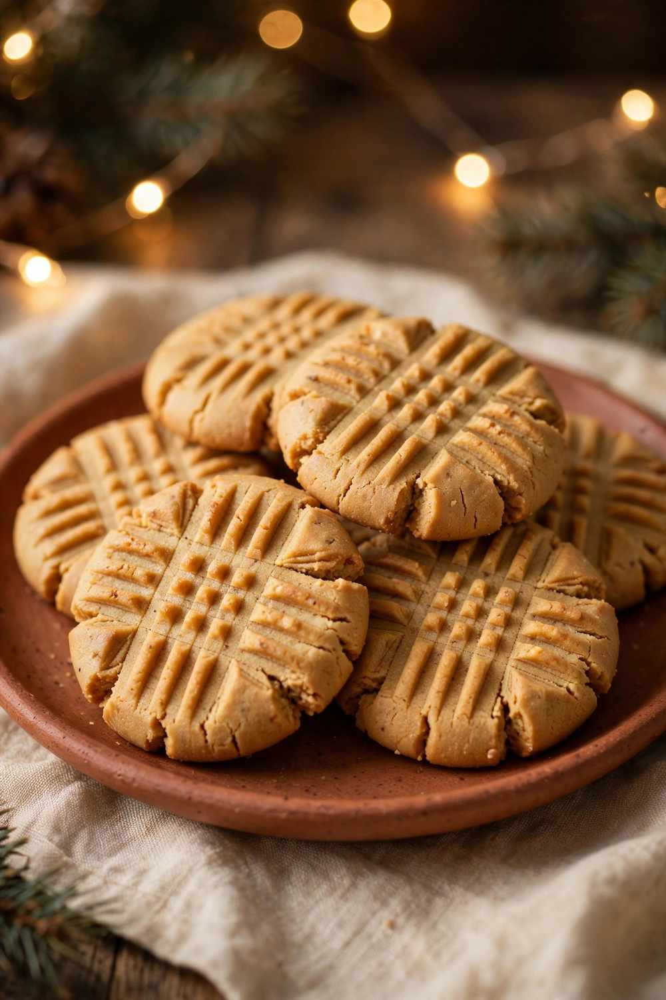
These are the peanut butter cookies everyone recognizes, with the classic crisscross fork marks pressed into the top and a rich, nutty flavor in every bite. They bake up tender and golden, with crisp edges and soft centers, and they taste like the after-school cookies of childhood. A glass of cold milk is not optional.
Ingredients
- 1 cup butter
- 1 cup peanut butter
- 1 cup sugar
- 1 cup brown sugar
- 2 eggs
- 1 tsp vanilla
- 2 1/2 cups flour
- 1 tsp baking soda
Directions
- Beat the softened butter with the peanut butter, sugar, and brown sugar until light and fluffy, about 3 minutes.
- Beat in the eggs one at a time, then beat in the vanilla until smooth.
- Whisk together the flour and baking soda, then stir into the butter mixture just until a soft dough forms.
- Preheat the oven to 350°F and line baking sheets with parchment paper.
- Roll the dough into balls about 1 inch across and place them 2 inches apart on the sheets.
- Press each ball flat with the tines of a fork, then press again at a right angle to make the classic crisscross pattern.
- Bake for 10 minutes, until the edges are set and lightly golden and the centers still look slightly soft. Cool 5 minutes on the sheet, then move to a rack.
23. Fruitcake Cookies

These cookies take everything people love about fruitcake, the candied fruit, the warm spice, the pecans, and shrink it into a single chewy bite, without the long aging or the loaf. They bake up dark, fragrant, and studded with color, and they keep beautifully in a tin. Even fruitcake skeptics come back for a second one.
Ingredients
- 1 cup butter
- 1 cup brown sugar
- 2 eggs
- 2 cups flour
- 1 tsp cinnamon
- 1/2 tsp nutmeg
- 1 tsp baking soda
- 2 cups mixed candied fruit
- 1 cup chopped pecans
Directions
- Beat the softened butter with the brown sugar until light and fluffy, about 3 minutes.
- Beat in the eggs one at a time until smooth.
- Whisk together the flour, cinnamon, nutmeg, and baking soda, then stir into the butter mixture just until combined.
- Fold in the mixed candied fruit and chopped pecans, mixing only until spread evenly through the dough. The dough will be thick and chunky.
- Preheat the oven to 325°F and line baking sheets with parchment paper.
- Drop the dough by rounded spoonfuls onto the sheets, leaving about 2 inches between cookies.
- Bake for 15 minutes, until the edges are set and lightly golden. Cool 5 minutes on the sheet, then move to a rack to cool completely.
24. Coconut Macaroons

These chewy mounds of shredded coconut are crisp and golden on the outside and soft inside, with sweetened condensed milk holding them together and a dip in melted chocolate on the bottom. They need no flour and no fuss, just a bowl and a spoon, and they look like little snowballs on a plate. They are naturally gluten-free, too.
Ingredients
- 3 cups shredded coconut
- 2/3 cup sweetened condensed milk
- 2 egg whites
- 1 tsp vanilla
- 1/4 tsp salt
- 4 oz melted chocolate for dipping
Directions
- Preheat the oven to 325°F and line baking sheets with parchment paper.
- Stir together the shredded coconut, sweetened condensed milk, vanilla, and salt until the coconut is evenly coated and the mixture holds together.
- In a separate clean bowl, whip the egg whites until they hold soft peaks, about 2 minutes.
- Gently fold the whipped egg whites into the coconut mixture with a spatula, mixing just until combined and light.
- Drop the mixture by rounded spoonfuls onto the sheets, shaping each mound into a neat peak with damp fingertips.
- Bake for 20 minutes, until the macaroons are set and golden brown at the edges and tips. Cool completely on the sheet.
- Dip the bottom of each cooled macaroon into the melted chocolate and set it back on the parchment to firm up for 20 minutes before serving.
Maple, cocoa & holiday favorites
The last tin-fillers — maple walnuts, cocoa crescents, sand tarts, buttermilk cookies, cherry winks and spiced speculoos.
25. Maple Walnut Cookies

These soft, golden cookies taste like a walk through a Vermont sugar shack, with maple syrup in the dough and a sweet maple glaze drizzled over the top. Chopped walnuts add crunch and a gentle bitterness that balances the sweetness, and the cookies stay soft for days in a tin. They are autumn and Christmas in one bite.
Ingredients
- 1 cup butter
- 1 cup brown sugar
- 1 egg
- 1/4 cup maple syrup
- 2 cups flour
- 1 tsp baking soda
- 1 cup chopped walnuts
- 1 cup powdered sugar
- 2 tbsp maple syrup for glaze
Directions
- Beat the softened butter with the brown sugar until light and fluffy, about 3 minutes.
- Beat in the egg and the maple syrup until smooth.
- Whisk together the flour and baking soda, then stir into the butter mixture just until combined.
- Fold in the chopped walnuts, mixing only until spread evenly through the dough.
- Preheat the oven to 350°F and line baking sheets with parchment paper.
- Drop the dough by rounded spoonfuls onto the sheets, leaving about 2 inches between cookies.
- Bake for 12 minutes, until the edges are golden and set and the centers still look slightly soft. Cool 5 minutes on the sheet, then move to a rack to cool completely.
- Whisk the powdered sugar with the maple syrup for glaze until smooth, then drizzle it over the cooled cookies. Let the glaze set 20 minutes before stacking.
26. Cocoa Almond Crescents
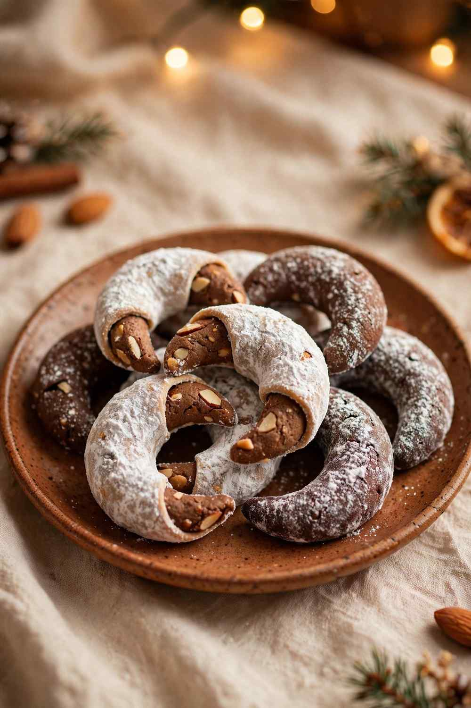
These chocolate crescents are the cocoa cousin of the classic almond crescent, with ground almonds and cocoa powder giving them a deep, nutty chocolate flavor. They crumble softly, melt on the tongue, and wear a thick coat of powdered sugar that looks like fresh snow. They are the dark, elegant cookie in a tin full of pale ones.
Ingredients
- 1 cup butter
- 1/2 cup powdered sugar
- 1 3/4 cups flour
- 1/4 cup cocoa powder
- 1 cup ground almonds
- 1 tsp vanilla
- powdered sugar for rolling
Directions
- Beat the softened butter with the powdered sugar until smooth and creamy, about 2 minutes.
- Beat in the vanilla, then stir in the flour, cocoa powder, and ground almonds just until a soft dough forms.
- Preheat the oven to 325°F and line baking sheets with parchment paper.
- Pinch off pieces of dough and roll each into a small log about 3 inches long, then curve the ends inward to form a crescent. Place 1 inch apart on the sheets.
- Bake for 15 minutes, until the cookies are set and the bottoms are lightly golden. The tops should stay dark and matte.
- Cool on the sheet for 5 minutes, then roll gently in powdered sugar while still warm.
- Cool completely on a rack and roll once more in powdered sugar before serving, for a thick snowy coat.
27. Sand Tarts
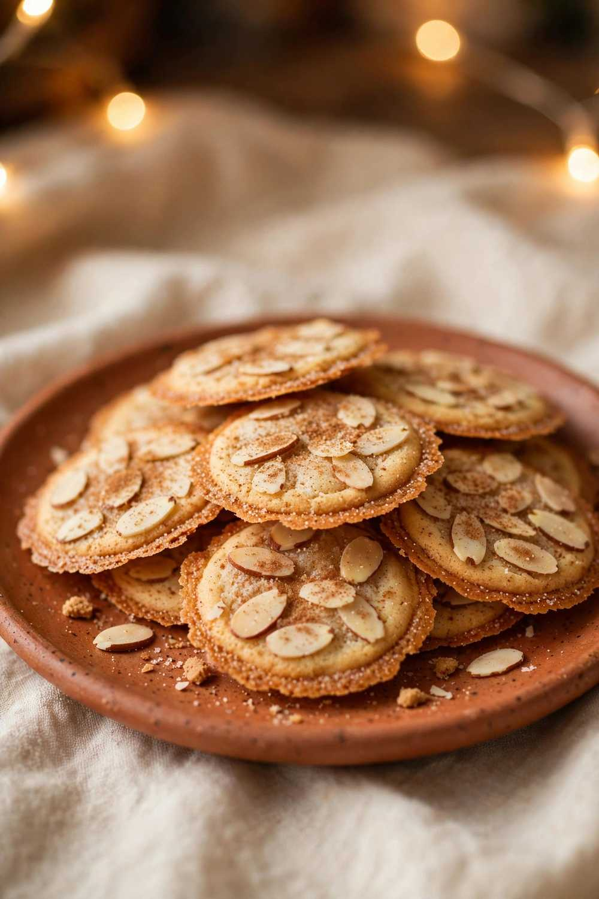
Sand tarts are the crisp, paper-thin cookies of Pennsylvania Dutch Christmas, rolled out until you can nearly see through them and brushed with egg white, cinnamon sugar, and sliced almonds. They shatter delicately when you bite in, with a buttery sweetness underneath the spice. They are the most old-fashioned cookie on this list, and the most addictive.
Ingredients
- 1 cup butter
- 2 cups sugar
- 2 eggs
- 3 cups flour
- 1 tsp baking powder
- 1 egg white
- cinnamon sugar
- sliced almonds
Directions
- Beat the softened butter with the sugar until light and fluffy, about 3 minutes.
- Beat in the eggs one at a time until smooth.
- Whisk together the flour and baking powder, then stir into the butter mixture just until a soft dough forms.
- Shape the dough into a flat disc, wrap tightly, and chill at least 1 hour, until firm.
- Preheat the oven to 350°F and line baking sheets with parchment paper.
- Roll the chilled dough out on a floured surface as thin as you can, about 1/8 inch thick, and cut into rounds.
- Place the rounds 1 inch apart on the sheets, brush lightly with the egg white, then sprinkle with cinnamon sugar and sliced almonds.
- Bake for 8 minutes, until the edges are set and lightly golden. Cool 5 minutes on the sheet, then move to a rack.
28. Old-Fashioned Buttermilk Cookies

These soft, cake-like cookies are the humble classic of the bunch, lightly spiced with nutmeg and made tender by buttermilk. They bake up pale and pillowy, with a gentle tang under the sweetness, and they are best eaten the day they are baked, dusted with a little nutmeg. They taste like a farmhouse kitchen in December.
Ingredients
- 1 cup butter
- 1 1/2 cups sugar
- 2 eggs
- 1 cup buttermilk
- 1 tsp vanilla
- 3 1/2 cups flour
- 1 tsp baking soda
- 1/2 tsp nutmeg
Directions
- Beat the softened butter with the sugar until light and fluffy, about 3 minutes.
- Beat in the eggs one at a time, then beat in the buttermilk and vanilla until smooth. The mixture may look slightly curdled; that is fine.
- Whisk together the flour, baking soda, and nutmeg, then stir into the butter mixture just until combined. Do not overmix.
- Preheat the oven to 375°F and line baking sheets with parchment paper.
- Drop the dough by rounded spoonfuls onto the sheets, leaving about 2 inches between cookies.
- Bake for 10 minutes, until the edges are set and the bottoms are lightly golden and the tops spring back when lightly pressed.
- Cool on the sheet for 5 minutes, then move to a rack to cool completely. Dust with a little extra nutmeg before serving if you like.
29. Cherry Winks
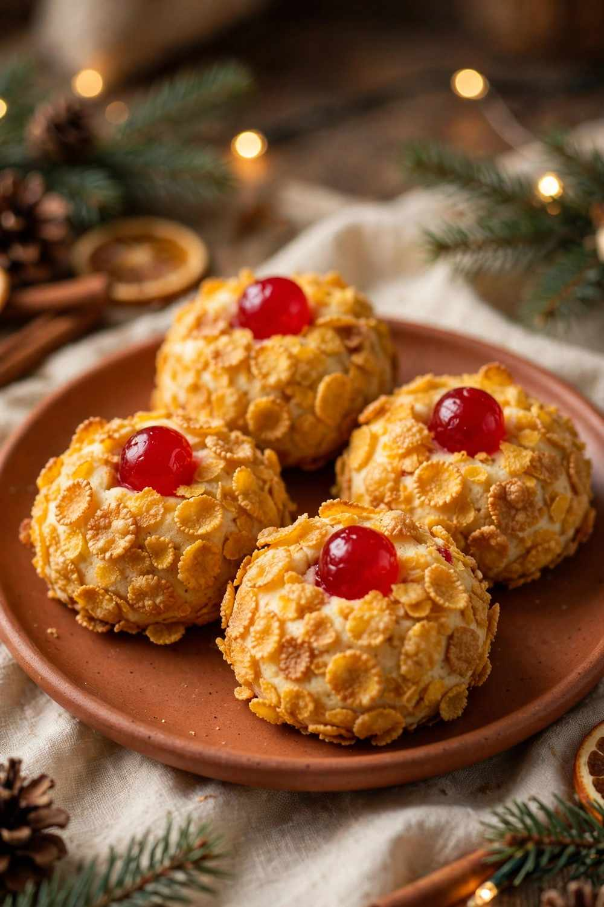
Cherry winks are the cheerful show-offs of the vintage cookie tin, rolled in crushed cornflakes for a golden crunch and crowned with a bright red maraschino cherry half. Inside, chopped dates and pecans make them rich and chewy, with a buttery crumb. They look like little Christmas ornaments and taste even better than they look.
Ingredients
- 1 cup butter
- 1 cup sugar
- 2 eggs
- 1 tsp vanilla
- 2 1/4 cups flour
- 1 tsp baking powder
- 1 cup chopped dates
- 1 cup chopped pecans
- 2 cups crushed cornflakes
- maraschino cherries
Directions
- Beat the softened butter with the sugar until light and fluffy, about 3 minutes.
- Beat in the eggs one at a time, then beat in the vanilla until smooth.
- Whisk together the flour and baking powder, then stir into the butter mixture just until combined.
- Fold in the chopped dates and chopped pecans, mixing only until spread evenly through the dough.
- Preheat the oven to 375°F and line baking sheets with parchment paper. Pour the crushed cornflakes into a shallow bowl.
- Roll the dough into balls about 1 inch across, roll each in the crushed cornflakes until coated, and place 2 inches apart on the sheets.
- Press half a maraschino cherry gently into the top of each cookie.
- Bake for 12 minutes, until the edges are set and lightly golden. Cool 5 minutes on the sheet, then move to a rack.
30. Spiced Speculoos Cookies

Speculoos are the crisp Belgian spice cookies that taste like Christmas in a single bite, warm with cinnamon, ginger, nutmeg, and cloves. They roll out thin, hold their festive shapes beautifully, and bake up snappy and fragrant, perfect for dunking in coffee or stacking in a tin. They are the last cookie on the list, and one of the best.
Ingredients
- 1 cup butter
- 1 cup brown sugar
- 1 egg
- 2 1/2 cups flour
- 2 tsp cinnamon
- 1 tsp ginger
- 1/2 tsp nutmeg
- 1/2 tsp cloves
- 1 tsp baking soda
Directions
- Beat the softened butter with the brown sugar until light and fluffy, about 3 minutes.
- Beat in the egg until smooth.
- Whisk together the flour, cinnamon, ginger, nutmeg, cloves, and baking soda, then stir into the butter mixture just until a soft dough forms.
- Shape the dough into a flat disc, wrap tightly, and chill at least 1 hour, until firm.
- Preheat the oven to 350°F and line baking sheets with parchment paper.
- Roll the chilled dough out on a floured surface to 1/4 inch thick and cut out shapes.
- Place the cutouts 1 inch apart on the sheets and bake for 12 minutes, until the edges are set and lightly golden.
- Cool on the sheet for 5 minutes, then move to a rack to cool completely. The cookies will crisp as they cool.

Baking & serving tips
Bake the chill-ahead doughs first — icebox logs, pinwheels, cutouts and springerle — then move on to drop cookies and bars while the oven is hot. Let cookies cool completely before frosting or packing, and store crisp and soft cookies in separate tins so textures stay true. Most of these cookies keep well: store them in airtight tins at room temperature for up to a week, or freeze undecorated cookies for up to a month and frost after thawing.
Related articles
More roundups from the same table:
- 30+ Christmas Cookie Recipes Everyone Will Love — classic, chocolate, spiced, filled and decorated cookies.
- 25+ Christmas Snowball Cookie Recipes — buttery snowball cookies in every flavor.
- 25+ No-Bake Christmas Desserts for a Crowd — truffles, cheesecakes, bars and treats.
- 25+ Christmas Breakfast Recipes for a Cozy Holiday Morning — casseroles, pancakes, cinnamon rolls and make-ahead bakes.
Keep exploring
- Browse the Desserts & Baking roundups — cookies, cakes, pies and sweet bakes.
- Browse all six categories — breakfast, lunch and dinner, desserts, air fryer, healthy recipes, and appetizers.
- More about the kitchen — what The Tasty Recipe Co is and how it works.
About The Tasty Recipe Co: Learn how we research, organize and review our food collections — see our About Us and Editorial Policy pages.
Recipe results can vary with ingredients, equipment, and technique. See our Disclaimer for food-safety and allergy notes.